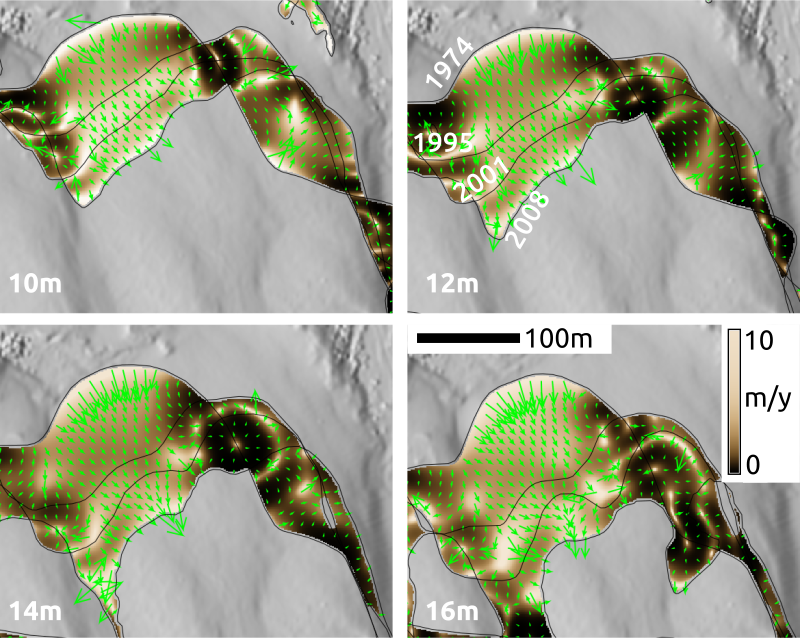

Turning
point clouds, surfaces,
and their time series
into information
in a framework of open geospatial science
Vaclav Petras
March 17, 2017
Chapter 1
Efficient processing of point clouds with variable density
Point density for airborne lidar

Point density for ground-based lidar
Point density for UAV imagery SfM point cloud

Point density for Kinect point cloud

Evaluating level of detail
- Local relief model (LRM)
- micro-topography, features other than trend

30-60cm wide, 30cm deep, 60m long gully (resolution 30cm)
Influence of grid-based decimation resolution
grid size: 0.1 m → 0.3 m → 0.9 m → 1.5 m
(points removed: 0 % → 81 % → 98 % → 99 %)


Evaluating level of detail
- Local relief model (LRM)
- micro-topography, features other than trend


30-60cm wide, 30cm deep, 60m long gully (resolution 30cm)
Influence of grid-based decimation resolution


Local Relief Model
- all points included
- 90% of points removed


Removing airborne lidar points

Removing ground-based lidar points
Removing UAV imagery SfM points
Chapter 2
Mapping gradient fields of landform migration
Space-Time Cube visualization
Contour evolution represented by isosurfaces
z = f (x,y,t) , z=16m and 20m


Simple experiment
Series of DEMs for tests created using Tangible Landscape


Contours, year 2001, z = 110m

Contours, year 2005, z = 110m

Contours, year 2008, z = 110m

Contours, year 2009, z = 110m

Define migration areas
Mask internal areas outside the range of 110m contour migration

Assign time [year] attribute
Each 110m contour is assigned a time [year] attribute

Interpolate temporal surface
Temporal surface is interpolated from a time series of 110m contours

Migration gradient field
Derived from spatio-temporal surface using derivatives of spline function


gradient lines over time and vectors over migration rates
Dynamic visualization of the gradient field
Shows spatial pattern of mass concentration and dispersal over time
Inspired by Tokyo Wind Speed application by Cameron Beccario.
Derived from air.js source code.
Uses HTML, CSS, JavaScript and D3.js library.
Real world data experiment
Gradient field of horizontal migration at z=12m for Jockey's Ridge dune
for years 1974, 1995, 2001, 2008, 2012, contour segmentation is needed
Gradient field and rate of migration
Migration of windward side of Jockey's Ridge dune at different elevations

Second order parameters
Temporal surface curvature:
- in gradient direction: spread acceleration
- in isoline direction: concentrating or dispersing spread


Generalization for complex dynamics
- integrating the fields across several elevation contours
- using implicit function f(x,y,t)=const to analyze countour evolution isosurface
- derive 3D gradient lines of fastest change using trivariate splines
Conclusion
- visual and quantitative technique
- magnitude and direction of change
- spatial distribution of rate of change
- detection of anomalies
-
analysis of 3D monitoring data or model calibration
- evolving shorelines and islands
- disease spread
- glacier melting
-
spatio-temporal interpolation of migrating landforms
Chapter 3
Lidar-based 3D fragmentation index
3D index of 3D raster

3D index of 3D raster

profile of 3D raster

point presence and index profiles

As 2D raster

Chapter 4
A framework for open geospatial science
Appendix
Selected additional projects
- Urban growth model – FUTURES
- Disease spread model – SOD
- Seamless desktop and remote computations
- Tangible Landscape for QGIS
- Course: Tools for open geospatial science
FUTURES PGA – before
- configuration file based interface

FUTURES PGA – after
- GUI, command line, Python

FUTURES PGA – after
- faster input/output, efficient memory usage
- fixed memory management, edge cases
- flexible inputs, interface
Sudden Oak Death Model
- hardcoded parameters → GUI + CLI (GRASS GIS)
- multiple stochastic runs which run in parallel (OpenMP)
- optimization
- undefined behavior → correct memory management
- tested and versioned

Tool for hybrid desktop-server workflow
- tests of processing or part of processing locally
- store and process the big data on a server
g.remote server=fatra.cnr.ncsu.edu ... \
grassdata=grassdata location=nc_spf_gremote_2 mapset=practice1 \
vector_input=max_3_4_5 raster_output=max_3_4_5_surface \
--exec \
v.surf.rst.mp input=max_3_4_5 elevation=max_3_4_5_surface
Tangible Landscape for QGIS
Course
Tools for open geospatial science
- Collaborative writing of scientific papers
- Revision control systems and wiki technologies
- QGIS + GRASS GIS
- command line, remote access, Linux
- Interactive notebooks
- Publishing code as part of an open source project
- Publishing data on web
- Reproducible computational environments
Course
Tools for open geospatial science
What it is
- a course with research focus
- a course with extension to industry
- tools like Git are daily bread in many companies
What it is not
- a course limited to geospatial topics
- authoring, management, computer knowledge needed as well
- the complete & comprehensive open science course
- this one is focused on software tools
- not data, open access, ...
- the course where you learn open source GIS
- this should happen in all other courses
Jupyter Notebook